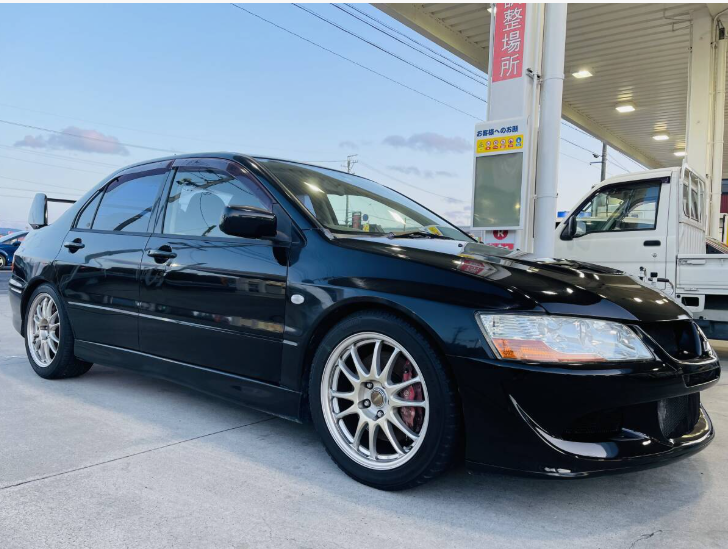
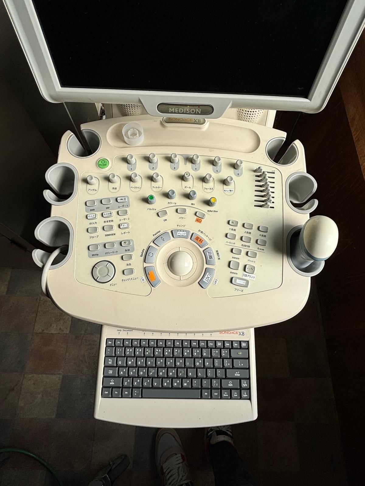
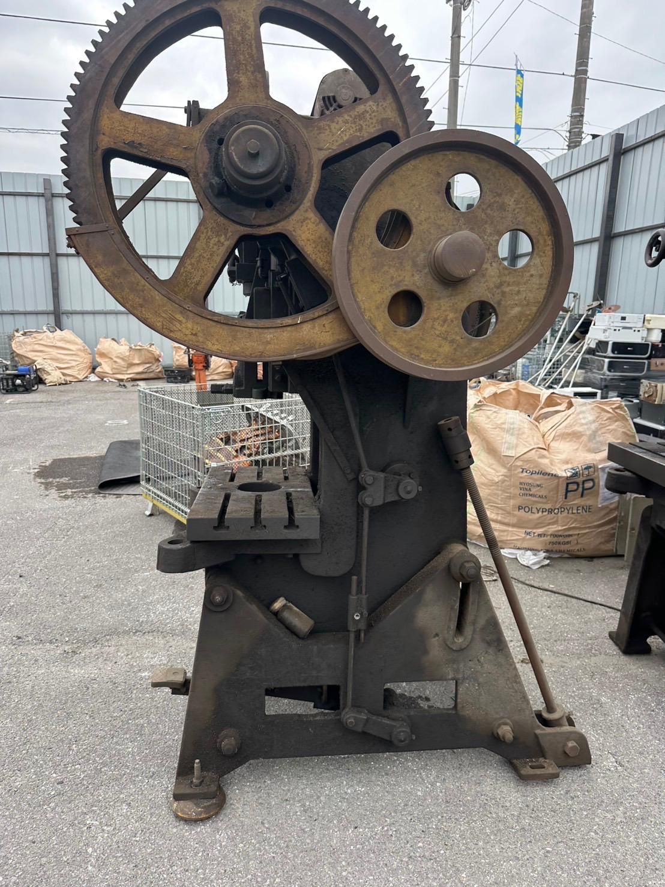

Global Trading Since 1993
Established in 1993, Amin Trading Co. operates across international trade, halal food processing, retail & wholesale grocery, and digital solutions.
1993年創業のアミン・トレーディング株式会社は、日本製自動車・機械・化学品の輸出、 ハラール認証食肉処理、食品卸売・小売、Web・ソフトウェア開発を行っています。
Our Operations



About / 会社概要
Established in 1993, Amin Trading Co. has grown into a diversified trading company serving domestic and international markets with reliability and long-term partnerships.
当社は1993年の創業以来、国内外のお客様と長期的な信頼関係を築きながら、 多角的な事業を展開してまいりました。
Our Businesses / 事業内容
Export of Japanese-made cars, industrial machinery and used medical equipment worldwide.
日本製自動車・産業機械の海外輸出
International export of ready-made garments from Bangladesh.
Halal-certified processing of Wagyu and regular cattle for domestic use and export.
ハラール認証の和牛・国産牛食肉処理（国内・輸出）
Wholesale and retail halal grocery operations.
ハラール食品の卸売・小売事業
Tailored websites and software for business needs.
業務に合わせたWeb・ソフトウェア開発
Contact / お問い合わせ
For business inquiries, partnerships, or export requests:
取引・提携・輸出に関するお問い合わせはこちらまでご連絡ください。
Email: info@amintrading.co